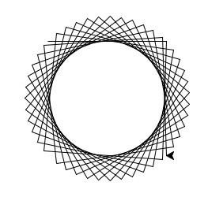
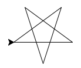
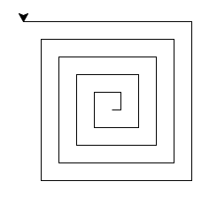
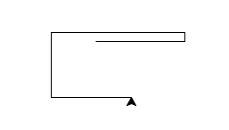

Submit the following programs via Gradescope:
- Due Date: 6 September Think CS: Chapters 1 & 2
Write a program that prints "Hello, World!" to the screen.
- Due Date: 7 September Think CS: Chapters 2 & 4
Write a program that draws an octogon (8-sided polygon).
Note: Choose a name for your file that is not turtle.py. When executing the "import turtle" statement, the computer first looks in the folder where the file is saved for the turtle module and then in the libraries (and other places on the path). So, it thinks the module is itself, causing all kinds of errors. To avoid this, name your program something like "myTurtle.py" or "program2.py". - Due Date: 8 September Think CS: Chapters 2 & 4
Write a program that implements the pseudocode ("informal high-level description of the operating principle of a computer program or other algorithm") below:
Repeat 45 times: Walk forward 100 steps Turn right 92 degreesYour output should look similar to:
 - Due Date: 11 September Think CS: Chapters 2 & 4
Write a program that will print the Hunter College motto ("Mihi cura futuri" which translates to: "The care of the future is mine") 10 times.
The output of your program should be:
Mihi cura futuri Mihi cura futuri Mihi cura futuri Mihi cura futuri Mihi cura futuri Mihi cura futuri Mihi cura futuri Mihi cura futuri Mihi cura futuri Mihi cura futuri
- Due Date: 12 September Think CS: Chapters 2 & 4
Write a program that draws a 5-pointed star.
Your output should look similar to:

- Due Date: 13 September Think CS: Chapters 2 & 4
Write a program that prompts the user to enter a phrase and then prints out the ASCII code of each character in the phrase.
A sample run of your program should look like:
Enter a phrase: I love Python! In ASCII: 73 32 108 111 118 101 32 80 121 116 104 111 110 33
Hint: If c is a character, ord(c) returns its ASCII code. For example, if c is 'I', then ord(c) returns 73. See Lab 2.
- Due Date: 14 September Think CS: Chapters 2 & 9
The Turtle drawing library has a command that will control the width that's drawn to the screen. For example, if you turtle was named tony, the following command would set the pen to draw at size 10:
tony.pensize(10)
Write a program that implements the pseudocode below:For i = 10, 15, 20, 25, ..., 50: Change the pen size to i Walk forward i steps Turn left 50 degreesYour output should look similar to:
- Due Date: 15 September Think CS: Chapters 2 & 9
Write a program that prompts the user for a DNA string, and then prints the length and GC-content (percent of the string that is C or G).
A sample run of your program should look like:
Enter a DNA string: ACGCCCGGGATG Length is 12 GC-content is 0.75
Hint: See Lab 2.
- Due Date: 18 September Think CS: Chapters 2 & 9
Write a program that prompts the user to enter a word and then prints out the word with each letter shifted left by 1. That is, 'a' becomes 'z', 'b' becomes 'a', ... 'y' becomes 'z', and 'z' becomes 'y'.
Assume that all inputted words are in lower case letters: 'a',...,'z'.
A sample run of your program should look like:
Enter a word: enigma Your word in code is: dmhflz
Hint: See the example programs from Lecture 2.
- Due Date: 19 September Think CS: Chapters 2 & 9
Write a program that asks the user to enter a phrase, and then print out every second character.
A sample run of your program should look like:
Enter a phrase: Mihi cura futuri M h u a f t r
Hint: See Lab 2.
- Due Date: 25 September Think CS: Chapters 4 & 9
Write a program that implements the pseudocode below:
For i = 10, 20, 30,... ,250: Walk forward i steps Turn left 90 degreesYour output should look similar to:
 - Due Date: 26 September Think CS: Chapters 2 & 4
Write a program that asks the user for the name of a color and then displays a turtle that color.
A sample run of your program should look like:
Enter a color name: purple
and the output should look similar to:
Hint: See Lab 2 for getting input from users and Lab 3 for colors.
- Due Date: 27 September Think CS: Chapters 2 & 4
Modify the program from Lab 3 to show the shades of blue.Your output should look similar to:

- Due Date: 28 September Think CS: Chapters 2 & 4
Write a program that asks the user for hex input and display the corresponding color (on a turtle) and numbers in decimal.
A sample run of your program should look like:
Enter a hex string: #A922A9
and the output should look similar to:
Hint: See Lab 2 for getting input from users and Lab 3 for colors.
- Due Date: 2 October Think CS: Chapters 2 & 4
Write a program that asks the user for a name of an image png file, the name of an output file. Your program should create a new image that has only the blue channel of the original image.
A sample run of your program should look like:
Enter name of the input file: csBridge.png Enter name of the output file: blueH.png
Sample input and resulting output files:


Note: before submitting your program for grading, remove the commands that show the image (i.e. the ones that pop up the graphics window with the image). The program is graded on a server on the cloud and does not have a graphics window, so, the plt.show() commands will give an error. Instead, the files your program produces are compared pixel-by-pixel to the answer to check for correctness.
- Due Date: 3 October Reading: Think CS: Section 2.7
Write a program that implements the pseudocode below:
1. Ask the user for the number of days until finals. 2. Print out the weeks until finals (weeks = days // 7) 3. Print out the leftover days (leftover = days % 7)
- Due Date: 4 October Reading: Think CS: Section 2.7 &
4
Write a program that asks the user for 5 whole (integer) numbers. For each number, the turtle should move forward that distance, and then turn left 90 degrees.A sample run of your program should look like:
Enter number: 100 Enter number: 10 Enter number: 150 Enter number: 73 Enter number: 90
and the output should look similar to:
 - Due Date: 5 October Reading: Think CS: Chapters 4 & 7
The program turtleString.py takes a string as input and uses that string to control what the turtle draws on the screen (inspired by code.org's graph paper programming). Currently, the program processes the following commands:
- 'F': moves the turtle forward
- 'L': turns the turtle 90 degrees to the left
- 'R': turns the turtle 90 degrees to the right
- '^': lifts the pen
- 'v': lowers the pen
Modify this program to allow the user also to specify with the following symbols:
- 'B': moves the turtle backwards
- 'r': change the pen color to red
- 'g': change the pen color to green
- 'b': change the pen color to blue
Hint: See Lecture 4 notes.
- Due Date: 10 October Reading: Think CS: Chapters 4 & 7
Write a program that asks the user for a whole number. If that number is even, your turtle should draw a blue line towards the left hand side of the screen. If that number is odd, your turtle should draw a red line towards the right hand side of the screen.
Hint: See Section 7.4 of the Python textbook and Lecture 4 notes.
- Due Date: 11 October Reading: Think CS: Section 8.10
Modify the flood map of NYC from Lab 4 to color the region of the map with elevation greater than 6 feet and less than or equal 20 feet above sea level the color grey (50% red, 50% green, and 50% blue).
Your resulting map should look like:

and be saved to a file called floodMap.png.
- Due Date: 12 October Reading: Think CS: Chapter 7
Write a program that asks the user for the name of a png file and print the number of pixels that are nearly white (the fraction of red, the fraction of green, and the fraction of blue are all above 0.75).
For example, if your file was of the snow pack in the Sierra Nevada mountains in California in February 2014:

then a sample run would be:
Enter file name: caDrought2014.png Snow count is 38010
Note: for this program, you only need to compute the snow count. Showing the image will confuse the grading script, since it's only expecting the snow count.
Hint: See Lab 5.
- Due Date: 13 October Reading: Think CS: Chapter 7
Write a program that asks the user the number of times they plan to ride the subway or bus this week. Your program should then tell the user if it is cheaper to buy a regular fare (single ride) metro card or 7-day unlimited cards. (Note: the rates increased as of 15 March 2017).
First, compute the cost per ride for the 7-day unlimited metroCard ($31.00 divided by the number of rides) and for the regular fares with bonus. Next:
- If number of rides is 1 or 2, print out the message: You should buy a regular ticket.
- If the number of rides is 3 or more, then do the following computation:
- Single cost of ride is $2.48 (cost with bonus for buying more than $5.50).
- 7-day cost of ride is $31.00/number of rides.
Otherwise, print out the message: You should buy a 7-day ticket.
Here's a sample run of the program:
How many rides? 2 You should buy a regular ticket.
And another run of the program:
How many rides? 30 You should buy a 7-day ticket.
- Due Date: 16 October Reading: UMd Logical Gates Overview
Write a logical epxression that is equivalent to the circuit that computes the majority of 3 inputs, called in1, in2, in3:
- If two or more of the inputs are True, then your expression should evaluate to True.
- Otherwise (two or more of the inputs are False), then your expression should evaluate to False.

Save your expression to a text file. See Lab 5 for the format for submitting logical expressions to Gradescope.
- Due Date: 17 October Reading: UMd Logical Gates Overview
Build a circuit that has the same behavior as a nand gate (i.e. for the same inputs, gives identical output) using only and, or, and not gates.
Save your expression to a text file. See Lab 5 for the format for submitting logical expressions to Gradescope.
- Due Date: 18 October Reading: Think CS: Chapters 2 &
4
Write a program that asks the user for a base, and then prints out all two digit numbers in that base. See example below for the expected format of the output.
A sample run of the program:
Enter base: 8 00 01 02 03 04 05 06 07 10 11 12 13 14 15 16 17 20 21 22 23 24 25 26 27 30 31 32 33 34 35 36 37 40 41 42 43 44 45 46 47 50 51 52 53 54 55 56 57 60 61 62 63 64 65 66 67 70 71 72 73 74 75 76 77
And another sample run of the program:
Enter base: 2 00 01 10 11
Hint: See notes from Lecture 3. As in the program from the lecture notes, your program only needs to work through base 16.
- Due Date: 19 October Reading: Numpy tutorial (DataCamp)
Write a program that asks the user for the name of an image, the name of an output file, and the region ('bounding box') to display. For the latter, ask for the upper left and lower right corners (i.e. the farthest left, highest, farthest right, and lowest). Save the cropped image to the output file specified by the user.
A sample run of your program should look like:
Enter image file name: csBridge.png Enter output file: croppedH.png Enter highest: 100 Enter lowest: 150 Enter farthest left: 200 Enter farthest right: 400
which would have as input and output:
Hint: See notes from Lecture 4.
Note: before submitting your program for grading, remove any commands that show the image (i.e. the ones that pop up the graphics window with the image). The program is graded on a server on the cloud and does not have a graphics window, so, the plt.show() commands will give an error. Instead, the files your program produces are compared pixel-by-pixel to the answer to check for correctness.
- Due Date: 23 October Reading: 10-mins to Pandas, DataCamp Pandas
Modify the program from Lab 6 that displays the NYC historical population data. Your program should ask the user for the borough, an name for the output file, and then display the fraction of the population that has lived in that borough, over time.
A sample run of the program:
Enter borough name: Queens Enter output file name: qFraction.png
The file qFraction.png:

Note: before submitting your program for grading, remove the commands that show the image (i.e. the ones that pop up the graphics window with the image). The program is graded on a server on the cloud and does not have a graphics window, so, the plt.show() commands will give an error. Instead, the files your program produces are compared pixel-by-pixel to the answer to check for correctness.
- Due Date: 24 October Reading: 10-mins to Pandas,
DataCamp Pandas
Write a program that computes the minimum, average, and maximum population for a borough (entered by the user). Your program should assume that the NYC historical population data file, nycHistPop.csv is in the same directory.
A sample run of your program:
Enter borough: Staten Island Minimum population: 727 Average population: 139814.23076923078 Maximum population: 474558
and another run:
Enter borough: Brooklyn Minimum population: 2017 Average population: 1252437.5384615385 Maximum population: 2738175
- Due Date: 25 October Reading:
Ubuntu Terminal Reference Sheet
Write an Unix shell script that does the following:
- Creates a directory, projectFiles.
- Creates 3 additional directories (as subdirectories of projectFiles): source, data, and results.
- Due Date: 26 October Reading: UMd Logical Gates Overview
Write a logical expression that takes a single input, in1, and always returns True. Your expression must only use in1 and the logical operators, and, or, and not
See Lab 5 for the format for submitting logical expressions to Gradescope.
Hint: Think about the circuit below:
- Due Date: 30 October Reading: 10-mins to Pandas, DataCamp Pandas
Modify the program from Lab 7 to:
- asks the user to specify the input file,
- asks the user to specify the output file,
- makes a plot of the fraction of the total population that are children over time from the data in input file, and
- stores the plot in the output file the user specified.
A sample run of the program:
Enter name of input file: DHS_2015_2016.csv Enter name of output file: dhsPlot.png
which produces an output:

Note: The grading script is expecting that the label (i.e. name of your new column) is "Fraction Children".
- Due Date: 31 October Reading: Think CS Section 6.7
Write a program, using a function main() that prints "Hello, World!" to the screen. See Lab 7.
- Due Date: 1 November Reading: Think CS Chapter 7 and Section 9.10
Write a program that implements the pseudcode below. Your program should ask the user for a binary number and print out the corresponding decimal number.
Ask user for input, and store in the string, binString. Set decNum = 0. For each c in binString, decNum = decNum * 2 if c is 1, then decNum = decNum + 1 Print decNumA sample run of the program:
Enter binary number: 10 Your number in decimal is 2
And another sample run of the program:
Enter binary number: 1111 Your number in decimal is 15
- Due Date: 2 November Reading: UMd Logical Gates Overview
Write a logical expression that takes a single input, in1, and always returns False. Your expression must only use in1 and the logical operators, and, or, and not
See Lab 5 for the format for submitting logical expressions to Gradescope.
- Due Date: 3 November Reading: Think CS Chapter 7 and Section 9.10
A DNA molecule can be modeled by two complementary strands of character strings:
Write a program that asks the user for a DNA string and prints the complement. The complementary strand has the following constraints:
- If the base is a 'A', it's complement is a 'T'.
- If the base is a 'C', it's complement is a 'G'.
- If the base is a 'G', it's complement is a 'C'.
- If the base is a 'T', it's complement is a 'A'.
A sample run of the program:
Enter DNA strand: GATTCGTAGC The complementary strand is CTAAGCATCG
And another sample run of the program:
Enter DNA strand: ACGTATATA The complementary strand is TGCATATAT
- Due Date: 6 November Reading: 10-mins to Pandas, DataCamp Pandas
Modify the parking ticket program from Lab 8 to do the following:
- Ask the user for the name of the input file.
- Ask the user for the attribute (column header) to search by.
A sample run:
Enter file name: Parking_Violations_Jan_2016.csv Enter attribute: Vehicle Color The 10 worst offenders are: WHITE 2801 WH 2695 GY 1420 BK 1153 BLACK 1054 BROWN 727 BL 656 GREY 574 SILVE 450 BLUE 412 Name: Vehicle Color, dtype: int64
And another run:
Enter file name: Parking_Violations_Jan_2016.csv Enter attribute: Vehicle Year The 10 worst offenders are: 0 3927 2015 1265 2014 1143 2013 1105 2012 772 2011 666 2007 643 2008 559 2010 509 2006 499 Name: Vehicle Year, dtype: int64
- Due Date: 7 November Reading: Think CS: Chapter 6
Fill in the missing function, monthString(), in the program, months.py. The function should take number between 1 and 12 as a parameter and returns the corresponding month as a string. For example, if the parameter is 1, your function should return "January". If the parameter is 2, your function should return out "February", etc.
Note: The grading scripts are expecting that your function is called monthString(). You need to use that name, since instead of running the entire program, the scripts are "unit testing" the function-- that is, calling that function, in isolation, with differrent inputs to verify that it performs correctly.
Hint: See notes from Lecture 7 and Lab 8.
- Due Date: 8 November Reading: UMd Logical Gates Overview
Logical gates can be used to do arithmetic on binary numbers. For example, we can write a logical circuit whose output is one more than the inputted number. Our inputs are in1 and in2 and the outputs are stored in out1, out2, and out3.

(click to launch new window with circuit)Here is a table of the inputs and outputs:
Inputs Outputs Decimal
Numberin1 in2 Decimal
Numberout1 out2 out3 0 0 0 1 0 0 1 1 0 1 2 0 1 0 2 1 0 3 0 1 1 3 1 1 4 1 0 0 Submit a text file with each of the outputs on a separate line:
#Name: YourNameHere #Date: November 2017 #Logical expressions for a 4-bit incrementer out1 = ... out2 = ... out3 = ...
Where "..." is replaced by your logical expression (see Lab 5). - Due Date: 9 November Reading: 10-mins to Pandas, DataCamp Pandas
Write a program that asks the user for a CSV of collision data (see note below about obtaining reported collisions from NYC OpenData). Your program should then list the top three contributing factors for the primary vehichle of collisions ("CONTRIBUTING FACTOR VEHICLE 1") in the file.
A sample run:
Enter CSV file name: collisionsNewYears2016.csv Top three contributing factors for collisions: Driver Inattention/Distraction 136 Unspecified 119 Following Too Closely 37 Name: CONTRIBUTING FACTOR VEHICLE 1, dtype: int64
This assignment uses collision data collected and made publicly by New York City Open Data, and can be found at:
https://data.cityofnewyork.us/Public-Safety/NYPD-Motor-Vehicle-Collisions/h9gi-nx95.
Since the files are quite large, use the "Filter" option and choose your birthday in 2016 and "Export" (in CSV format) all collisions for that day. We will use this data set for future programs, so, instead of downloading the test files multiple times, save a copy for future use.Hint: See Lab 8 for accessing and analyzing structured data.
- Due Date: 10 November Reading: Github Guide
In Lab 8, you created a github account. Submit a text file with the name of your account. The grading script is expecting a file with the format:
#Name: Your name #Date: November 2017 #Account name for my github account AccountNameGoesHere
- Due Date: 13 November Reading: Folium Tutorial
Write a program that uses folium to make a map of New York City. Your map should be centered at (40.75, -74.125) and include a marker for the main campus of Hunter College. The HTML file your program creates should be called: nycMap.html
Hint: See Lab 9.
- Due Date: 14 November Reading: Folium Tutorial
Using folium (see Lab 9), write a program that asks the user for the name of a CSV file, name of the output file, and creates a map with markers for all the traffic collisions from the input file.
A sample run:
Enter CSV file name: collisionsThHunterBday.csv Enter output file: thMap.html
which would produce the html file:
(The demo above is for October 18, 2016 using the time the collision occurred ("TIME") to label each marker and changed the underlying map with the option: tiles="Cartodb Positron" when creating the map.)
This assignment uses collision data collected and made publicly by New York City Open Data. See Programming Problem #39 for details on this data set. When creating datasets to test your program, you will need to filter for both date (to keep the files from being huge) and that there's a location entered. The former is explained above; to check the latter, add the additional filter condition of "LONGITUDE is not blank".
Hint: For this data set, the names of the columns are "LATITUDE" and "LONGITUDE" (unlike the previous map problem, where the data was stored with "Latitude" and "Longitude").
- Due Date: 15 November Reading: Think CS Chapter 6 and Chapter 7
Write a function, computeFare(), that takes as two parameters: the zone and the ticket type, and returns the Copenhagen Transit fare.
- If the zone is 2 or smaller and the ticket type is "adult", the fare is 23.
- If the zone is 2 or smaller and the ticket type is "child", the fare is 11.5.
- If the zone is 3 and the ticket type is "adult", the fare is 34.5.
- If the zone is 3 or 4 and the ticket type is "child", the fare is 23.
- If the zone is 4 and the ticket type is "adult", the fare is 46.
- If the zone is greater than 4, return a negative number (since your calculator does not handle inputs that high).
A template program, copenhagenTransit.py, is available on the CSci 127 repo on github. The grading script does not run the whole program, but instead tests your function separately ('unit tests') to determine correctness. As such, the name of the function must match exactly (else, the scripts cannot find it).
A sample run:
Enter the number of zones: 3 Enter the ticket type (adult/child): Adult The fare is 34.5
And another:
Enter the number of zones: 2 Enter the ticket type (adult/child): child The fare is 11.5
Hint: See Lab 8.
- Due Date: 16 November Reading: Think CS: Chapter 6 and Folium Tutorial
Fill in the following functions in a program that maps GIS data from NYC OpenData CSV files and marks the current location and closest point:
- getData() that asks the user for the name of the CSV and returns a dataframe of the contents.
- getColumnNames() that asks the user for the exact name of the columns that contains the latitude and longitude and returns those values as a tuple. Since the NYC OpenData files use different names for the columns in different datasets (such as "Lat", "Latitude", "LATITUDE" for latitude), the program asks for the name of the column as well as the name of the data file.
- getLocale() asks the user for latitude and longitude of the user's current location and returns those floating points numbers.
- computeDist() that computes the squared distance
between two points (x1,y1) and (x2,y2):
(x1-x2)2 + (y1-y2)2
A sample run to find the closest CUNY campus to the Brooklyn Navy Yard:
Enter CSV file name: cunyLocations.csv Enter column name for latitude: Latitude Enter column name for longitude: Longitude Enter current latitude: 40.7021 Enter current longitude: -73.9708 Enter output file: closestCUNY.html
which would produce the html file:
Another sample run to find the closest recycling bin to Roosevelt Island (using the list of recycling bins from https://data.cityofnewyork.us/Environment/Litter-Basket-Inventory/es7t-6u8y):
Enter CSV file name: recyclingBins.csv Enter column name for latitude: Latitude Enter column name for longitude: Longitude Enter current latitude: 40.7605 Enter current longitude: -73.951 Enter output file: recyc.html
which would produce the html file:
A template program, mapClosest.py, is available on the CSci 127 repo on github. The grading script does not run the whole program, but instead runs each of your functions separately ('unit tests') to determine correctness. As such, the names of the functions must match exactly the ones listed above (else, the scripts cannot find them).
Hint: See Lab 9.
- Due Date: 17 November Reading: Think CS: Chapter 6
Fill in the missing functions:
- average(region): Takes a region of an image and returns the average red, green, and blue values across the region.
- setRegion(region,r,g,b): Takes a region of an image and red, green, and blue values, r, g, b. Sets the region so that all points have red values of r, green values of g, and blue values of b.
The functions are part of a program that averages smaller and smaller regions of an image until the underlying scene is visible (inspired by the elegant koalas to the max).
For example, if you inputted our favorite image, you would see (left to right):


and finally:
A template program, averageImage.py, is available on the CSci 127 repo on github. The grading script does not run the whole program, but instead runs each of your functions separately ('unit tests') to determine correctness. As such, the names of the functions must match exactly the ones listed above (else, the scripts cannot find them).
Hint: See notes from Lecture 9.
- Due Date: 20 November Reading: Think CS: Chapter 3
The program, errorsHex.py, has lots of errors. Fix the errors and submit the modified program.
Hint: See Lab 10.
- Due Date: 21 November Reading: Think CS: Chapter 8
Modify the program from Lab 10 that makes a turtle walk 100 times. Each "walk" is 10 steps forward and the turtle can turn 0,1,2,...,359 degrees (chosen randomly) at the beginning of each walk.
A sample run of your program:

- Due Date: 22 November Reading: Think CS: Chapter 8
Write a program that asks the user to enter a string. If the user enters an empty string, your program should continue prompting the user for a new string until they enter a non-empty string. Your program should then print out the string entered.
A sample run of your program:
Enter a non-empty string: That was empty. Try again. Enter a non-empty string: That was empty. Try again. Enter a non-empty string: Mihi cura futuri You entered: Mihi cura futuri
Hint: See Lab 10.
- Due Date: 27 November Reading: MIPS Wikibooks
Write a simplified machine language program that prints the motto: Mihi cura futuri
See Lab 11 for details on submitting the simplified machine language programs.
Hint: You may find the following table useful:

(Image from wikimedia commons) - Due Date: 28 November Reading: MIPS Wikibooks
Write a simplified machine language program that has register $s0 loop through the numbers 1, 2, ..., 10.
See Lab 11 for details on submitting the simplified machine language programs.
- Due Date: 29 November Reading: MIPS Wikibooks
Modify the simplified machine language program, "Interactive", to compute your age with respect to 2017 (the demonstration program currently uses 2013).
See Lab 11 for details on submitting the simplified machine language programs.
- Due Date: 30 November Reading:
Ubuntu Terminal Reference Sheet
Using Unix shell commands, write a script that counts the number of .py files in current working directory.
Hint: See Lab 11.
- Due Date: 1 December Reading: Cplusplus Tutorial
Write a C++ program that prints "Hello, World!" to the screen.
Hint: See Lab 12 for getting started with C++.
- Due Date: 4 December Reading: Cplusplus Tutorial
Write a C++ program that will print the Hunter College motto ("Mihi cura futuri" which translates to: "The care of the future is mine") 10 times.
The output of your program should be:
Mihi cura futuri Mihi cura futuri Mihi cura futuri Mihi cura futuri Mihi cura futuri Mihi cura futuri Mihi cura futuri Mihi cura futuri Mihi cura futuri Mihi cura futuri
Hint: See Lab 12 for getting started with C++.
- Due Date: 5 December Reading: Cplusplus Tutorial
Write a C++ program that converts kilometers to miles. Your program should prompt the user for the number of kilometers and then print out the number of miles.
A useful formula: miles = 0.621371* kilometers.
See Lab 4 for designing Input-Process-Output programs and Lab 12 for getting started with C++.
- Due Date: 6 December Reading: Cplusplus Tutorial
Write a C++ program program that asks the user for a number and draws a triangle of that height and width using 'character graphics'.
A sample run:
Enter a number: 6 * ** *** **** ***** ******
- Due Date: 7 December Reading: Cplusplus Tutorial
Write a C++ program that asks the user for the hour of the day (in 24 hour time), and prints
- "Good Morning" if it is strictly before 12,
- "Good Afternoon" if it is 12 or greater, but strictly before 17, and
- "Good Evening" otherwise.
A sample run:
Enter hour (in 24 hour time): 11 Good Morning
Another sample run:
Enter hour (in 24 hour time): 20 Good Evening
And another run:
Enter hour (in 24 hour time): 15 Good Afternoon
- Due Date: 8 December Reading: Cplusplus Tutorial
Write a C++ program that asks the user for the starting amount, and prints out the yearly balance of a savings account, assuming 10% interest, until the amount has doubled.
A sample run:
Please enter the starting amount: 1000 Year 1 1100.00 Year 2 1210.00 Year 3 1331.00 Year 4 1464.10 Year 5 1610.51 Year 6 1771.56 Year 7 1948.72 Year 8 2143.59
Hint: Use an indefinite loop.
- Due Date: 11 December Reading: Cplusplus Tutorial
Write a C++ program that asks the user for their age, and continue asking until the number entered positive (that is, greater than 0).
A sample run:
Please enter age: -6 Entered a negative number. Please enter age: -50 Entered a negative number. Please enter age: 100 You entered your age as: 100
Hint: Rewrite the Python program from Lab 10 in C++.
- Due Date: 12 December Reading: Cplusplus Tutorial
Write a C++ program that asks the user for a whole number between -31 and 31 and prints out the number in "two's complement" notation, using the following algorithm:
- Ask the user for a number, n.
- If the number is negative, print a 1 and let x = 32 + n.
- If the number is positive, print a 0 and let x = n.
- Let b = 16.
- While b > 0.5:
- If x >= b then print 1, otherwise print 0
- Let x be the remainder of dividing x by b.
- Let b be b/2.
- Print a new line ('\n').
A sample run:
Enter a number: 8 001000
Another run:
Enter a number: -1 111111